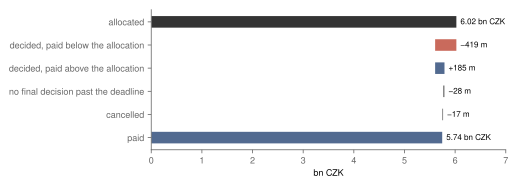
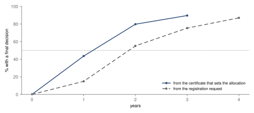
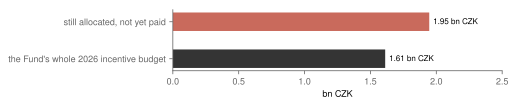
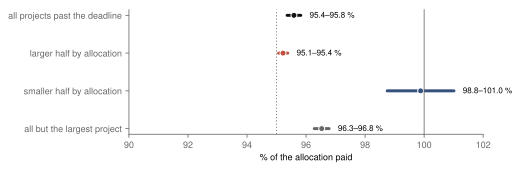
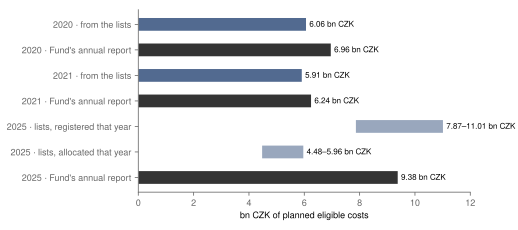

Research · Pre-specified · Czech film production incentives, 2016–2026
Do Czech film incentives get paid in full?
Of the money allocated to film and TV productions whose deadline has passed, 95.4–95.8 % was paid; projects registered since 2023 have more than a year's budget allocated and not yet paid.
- Paid
- 95.4–95.8 % of 6.02 bn CZK allocated to 351 projects registered 2016–2021 whose deadline has passed · nearly all paid, by a rule set before the results
- Waiting
- 1.1 years until half of the projects had a final decision, counted from the allocation
- Allocated, not yet paid
- 1.95 bn CZK to 142 projects registered 2023–2025 · 1.21 times the Fund's 2026 incentive budget
- Big and small
- 95.1–95.4 % paid to the larger half of projects, against 98.8–101.0 % to the smaller half
In short
- Paid. Projects whose deadline has passed were allocated 6.02 bn CZK and paid 5.74 bn CZK, 95.4–95.8 % (fig. 1).
- Waiting. Half had a final decision about 14 months after their allocation, and 90 % within three years (fig. 2).
- Allocated, not yet paid. Newer projects have 1.95 bn CZK allocated and not yet paid, 1.21 times the 2026 budget (fig. 3).
- Big and small. The larger projects got a smaller share of their allocation than the smaller ones (fig. 4).
- Planned costs. The allocations imply planned costs that differ from the Fund's own figures, 13 % and 5 % lower for 2020 and 2021 (fig. 5).
Arithmetic on the Fund's own lists of projects. Nothing here says whether the incentives pay off for the state.
Say a foreign series shoots in Prague. If it spends enough here, the State Audiovisual Fund pays it back a share of the costs: 20 % for projects registered before 2025, and 25 %, or 35 % for animation, from then on57.
The allocation comes early: when a project enters the scheme, the Fund sets money aside from the producer's planned costs. It pays only after the shoot, on the costs actually spent, within four years of registering3.
How much of what is allocated is paid in the end, how long does it take, and how much is still set aside? The Fund lists every project, with what it allocated and paid12.
How much was paid
351 projects, all registered between 2016 and 2021, are past their deadline by at least half a year, so their outcome should be in. They were allocated 6.02 bn CZK and paid 5.74 bn CZK: 95.4 %.
Of 6.02 bn CZK allocated, 5.74 bn CZK was paid; most of the difference is decided projects paid below their allocation.

An allocation is a ceiling, not a bill: the rebate is a share of the costs claimed. Decided projects paid below their first allocation account for 419 m CZK; some projects were paid above their first allocation, which gives back 185 m CZK.
The rest is small: 28 m CZK sits with 8 projects that have no final decision past their deadline, and 17 m CZK with 2 cancelled ones. If the undecided were paid in full, the share would be 95.8 %.
97 % of the projects got a final decision. The typical project received 98.6 % of its allocation.
By the rule set before the results, the label is "nearly all paid": 95.4–95.8 %. That clears the rule's 95 % line, but only narrowly.
How long it takes
From the certificate that sets the allocation, 44 % of projects had a final decision within a year, 80 % within two and 90 % within three. Half took about 14 months.
Half of the projects had a final decision about 14 months after their allocation.

Counted from the first request to join the scheme, half took 1.8 years, and 87 % had a decision within four.
Projects still waiting count only for as long as they have been followed; beyond the years shown, too few are left to tell.
Allocated and not yet paid
On 7 October 2026, 142 projects registered between 2023 and 2025 were still waiting for a final decision or payment. Their allocations not yet paid add up to 1.95 bn CZK2.
Projects registered since 2023 hold 1.95 bn CZK not yet paid, more than the whole 2026 budget.

The Fund's whole incentive budget for 2026 is 1.61 bn CZK4, so this is 1.21 times a year's money. If these projects end as the older ones did, about 1.93–1.94 bn CZK would be paid.
It is money set aside, not a debt: some projects will be paid less and some cancelled. The lists show no payment schedule, so it does not say how many years of budget it will take.
On 27 March 2026 the Fund stopped taking new registrations, saying the 2026 budget was fully committed to those already in the scheme4. The figure fits that, but this study does not test whether old allocations crowd out new ones.
Big and small projects
Half of the projects past their deadline were each allocated more than 4.9 m CZK, and that half holds 92 % of the money. The five largest alone hold 24 %.
The larger projects were paid a smaller share of their allocation than the smaller ones.

The larger half got 95.1–95.4 % of its allocation, the smaller half 98.8–101.0 %. Because the larger projects carry most of the money, the overall share sits close to theirs. Without the single largest project it would be 96.3–96.8 %.
The planned costs behind the allocations
An allocation divided by the rebate rate gives the planned costs it was set from. For projects allocated in 2020 that is 6.06 bn CZK, against 6.96 bn CZK in the Fund's annual report; for 2021, 5.91 bn CZK against 6.24 bn CZK8.
The allocations imply planned costs that differ from the Fund's own figures for 2020 and 2021.

For 2025 the report counts applications filed that year, 9.38 bn CZK9, and the lists have no matching date. Projects registered in 2025 give 7.9–11.0 bn CZK, those allocated in 2025 4.5–6.0 bn CZK. Each range runs from counting every project registered in 2025 at the animation rate of 35 % to counting it at the headline 25 %7.
Which way the gap should go is not known: animation at 35 % and the rebate on withholding tax push the figure from the lists up, the 450 m CZK cap per project pushes it down, and registration years do not match calendar years. These are planned costs, not money spent, and they do not say whether the incentives pay for themselves.
What this does not show
- Whether the incentives pay off: the lists hold allocations and payments, not spending, jobs or taxes, and nothing on what would have been shot here anyway.
- Why a project got less than its allocation: the lists do not separate lower spending from a cut, and a shortfall is not read as the Fund failing to pay.
- Whether old allocations leave too little for new projects: that needs the Fund's payment schedule.
- Paid is a current total: clawbacks may or may not be netted in it.
- No origin: the lists do not say whether a project is a foreign service production or a Czech one, so there is no split by origin.
- The money not yet paid is not a bound: the new regime is excluded, which pushes it down, and delayed payouts of old projects may sit in the undecided figure, reported separately.
- Two list dates: the list of projects registered 2016–2021 is from 30 January 2026, so its open projects may have closed since; the two lists are reported apart.
- Projects entered under the law in force from 2026, which are not in the lists.
How this was done
The questions, the rule for the label and the checks were registered with signed tags before any amount in the lists was read, and the code was frozen before it ran. The lists hold every project on the Fund's two lists, not a sample, so there are no intervals.
The run is flagged twice, as the design requires, and the flags change no label. One list has 509 rows, not the 507 counted at registration, because two project numbers are printed without a slash. And 201 of 526 decided projects were paid more than their latest allocation: 198 by no more than 5 % and 1 m CZK, the margin the rules allow, and 3 by more than 5 % but less than 1 m CZK; 27.8 m CZK in all.
The author builds production software for film crews (FilmRunner).
Details and reproduction
How the result is labelled
The share paid is the money paid divided by the money allocated, over projects whose deadline to apply, plus 365 days for a project that applied in two parts, passed at least 180 days before the list date. It has two bounds: projects with no final decision at what they have been paid so far (95.4 %), or as if paid in full (95.8 %). The label, fixed before the results, is "nearly all paid" if both bounds are at least 95 %, "most paid" if both lie from 80 % to 95 %, "substantially less than allocated" if both are below 80 %, and "depends on the undecided projects" if they fall in different bands. Both bounds are at least 95 %, so the label is "nearly all paid".
The deadline to apply is four years from the registration certificate, as the lists print it. A project is decided once its final incentive decision is at least 180 days old; one with a younger decision counts as payment pending, and there were none among the 351. All 351 come from the list of projects registered 2016–2021; none registered since 2023 is yet past its deadline.
All registered checks
No check changes the label. On the latest allocation instead of the first, the share is 99.0–99.6 %; without the cancelled projects, 95.6–96.1 %; with a margin of 90 days instead of 180, 96.6–97.0 %, and of 365 days, 95.3–95.8 %; all four stay at 95 % or above. By year of registration, which the rule does not label, it ranges from 88.4–89.5 % for 2018 to 103.3 % for 2017, where more was paid than allocated. Over all 484 decided projects, past their deadline or not, it is 97.2 %; and paid so far over all 642 projects with an allocation, finished or not, 81.1 %.
The waiting times use the Aalen–Johansen estimate of cumulative incidence, with cancellation and passing the deadline by 180 days as competing ends and projects still waiting censored at the list date; a year is shown only while at least 30 projects are still waiting (37 at three years, 7 at four). For the older list alone, 90 % had a decision within three years.
For the older list of 30 January 2026, 6 projects were still open with 4.6 m CZK not yet paid, and 8 projects past their deadline without a final decision held 29.4 m CZK; they may still be paid.
The order of dates (request, registration, evidence, decisions) breaks in 1 project, under the 2 % that would flag the run. 2 projects have both a cancellation and a final decision and count as decided.
Flags, deviations and exposures
Flags
The registration counted 507 project numbers in the older list by a pattern that needs a slash; the list has 509 rows, all distinct, because two numbers are printed without it. The registered count stays 507 and the run stays flagged. 201 of 526 projects with a final decision were paid above their latest allocation, more than the 2 % that flags the run. The applicant guide cuts an application above the allocation "by more than 5 % or by more than 1 m CZK"3: 198 are within both, 3 exceed 5 % but not 1 m CZK, and none exceeds 1 m CZK (the largest excess is 0.87 m CZK). The excess sums to 27.8 m CZK. This was looked at after the run and changes no number.
Deviations
The lists print one allocation and one new allocation, not split by instalment as the design assumed; the first allocation is the promise, the new one where printed the latest promise, and amounts with haléře are read exactly. Where one cell holds two evidence dates, the wait starts at the earlier. The design left ten readings open, from how an event is dated to how ties are broken; each was fixed and logged before the code was frozen, and an independent review of the code led to further fixes before the tag. All are in the change log.
Exposures
Before registration, a web-search summary showed one project's allocation and payment, about 0.77 paid; no rule used it. While the reading code was written, a faulty mask showed the assistant two outcome cells of one project, a change date and four digits of an allocation, and the code counted how many cells in each outcome column are filled, which gives the number of decided and cancelled projects but no money. The annual-report pages with the planned costs also print the total allocations of those years, and p. 84 of the 2025 report the requested allocations of a few interrupted 2025 projects; the agent that searched the annual reports saw their yearly totals of paid incentives and passed none on. Before registration, press figures (about 9.3 bn CZK of applications in 2025, a claim of four billion brought to Czechia, a 2026 split between incentives and selective support) and the rates on the Fund's English page were heard; the lists' column headers, counts by year, masked number patterns and the titles of their first four rows were read; and only the counts by year of an older list of 15 March 2024. All are recorded in the design before the code tag; none changed a rule.
Figure notes: sources and keys
Fig. 1 · Projects past their deadline from the list of 30 January 20261. Black: allocated. Red: decided projects paid below their first allocation. Blue step: decided projects paid above it, also measured against the first allocation. Grey: projects with no final decision past the deadline, and cancelled projects. Blue: paid.
Fig. 2 · Both lists12, all 642 projects with an allocation. Blue: years from the certificate that sets the allocation. Grey, dashed: years from the registration request. Dotted: half.
Fig. 3 · Red: allocated and not yet paid for projects registered 2023–2025 still waiting for a decision or payment, list of 7 October 20262. Black: the 2026 incentive subsidy4.
Fig. 4 · Projects past their deadline1; larger and smaller half split at the median allocation, 4.9 m CZK. The dot is the middle of the range. Dotted: 95 %, the line of the label; solid: 100 %.
Fig. 5 · Blue: the sum of allocations divided by the headline rate in force when each project asked to register, 20 % before 2025 and 25 % from 2025567; pale: the 2025 range down to the 35 % animation rate. Cancelled projects left out. Black: planned eligible costs in the annual reports, for projects allocated in 2020 and 20218 and for evidence applications filed in 20259.
Reproduction
Every result number on this page is filled in by a script from results.json; the excess above the allocation comes from the design's change log. From the repository root, with the snapshot in tools/data/rebates/:
tools/rebates/cli.py--verify-files, then--run --unblindat the tagrebates-code: the registered results, with tests on invented lists intools/rebates/.tools/rebates_article/article.py: this page and figs 1 to 5, drawn from the results file after the results; nothing is estimated there.
The design is docs/research/rebates-design.md. Software: Python and poppler10.
References
- Státní fond audiovize (2026) Seznam pobídkových projektů 2016–2021, state of 30 January 2026. Available at: https://sfa.gov.cz/data/document/2026/02/Seznam-pobidkovych-projektu-2016-2021-30012026.pdf (Accessed: 5 November 2026).
- Státní fond audiovize (2026) Seznam pobídkových projektů 2023–2026, state of 7 October 2026. Available at: https://sfa.gov.cz/data/document/2026/10/Seznam-pobidkovych-projektu-2023-2026-7.10.2026.pdf (Accessed: 5 November 2026).
- Státní fond audiovize (2025) Průvodce žadatele – filmové pobídky 2025, the applicant guide for the law in force until 31 December 2025. Available at: https://sfa.gov.cz/data/download/2025/01/Pruvodce-zadatele-filmove-pobidky-2025.pdf (Accessed: 5 November 2026); snapshot sha256 in
docs/research/rebates-files.sha256. - Státní fond audiovize (2026) Doprovodná informace k zastavení příjmu žádostí, notice of 27 March 2026, with the 2026 incentive subsidy of 1 611 972 229 CZK. Available at: https://sfa.gov.cz/data/article/2026/03/Doprovodna-informace-k-zastaveni-prijmu-zadosti.pdf (Accessed: 5 November 2026).
- Czech Republic (2012) Zákon č. 496/2012 Sb., o audiovizuálních dílech a podpoře kinematografie, as promulgated, §43(4)(a), and its version history. Available at: https://www.zakonyprolidi.cz/cs/2012-496/zneni-20121231 and https://www.zakonyprolidi.cz/cs/2012-496/historie (Accessed: 5 November 2026).
- Czech Republic (2016) Zákon č. 139/2016 Sb., amending act 496/2012, point 74 and transitional provision 3. Available at: https://www.zakonyprolidi.cz/cs/2016-139 (Accessed: 5 November 2026).
- Czech Republic (2024) Zákon č. 480/2024 Sb., amending act 496/2012, points 201–202 and transitional provision 24. Available at: https://www.zakonyprolidi.cz/cs/2024-480 (Accessed: 5 November 2026).
- Státní fond audiovize (n.d.) Výroční zprávy 2018–2022, one archive; the annual reports for 2020 (p. 38) and 2021 (p. 35), line “Součet uznatelných nákladů, tj. předpokládaná investice všech projektů, které se v roce … alokovaly”. Available at: https://sfa.gov.cz/data/document/2026/01/Vyrocni-zprava-2018-2022.zip (Accessed: 5 November 2026).
- Státní fond audiovize (2026) Výroční zpráva 2025, annex p. 84, line “Žádosti o evidenci podané v 2025 – uznatelné náklady = investice v ČR celkem”. Available at: https://sfa.gov.cz/data/document/2026/09/web-VZ-SFA-2025.pdf (Accessed: 5 November 2026).
- Python Software Foundation (2026) Python, version 3.12.12, standard library only; poppler pdftotext, version 26.01.0 (recorded in
results.json); the Aalen–Johansen estimator of cumulative incidence, written for the study. Available at: https://www.python.org/ and https://poppler.freedesktop.org/ (Accessed: 6 November 2026).